III. BÖLÜM
İNSANOĞLUNUN DOĞDUĞU YER
İnsanoğlunun dünya üzerinde ortaya çıkış yerini Mu diyarında bulduğumuza şüphe yok. Birçok kaynak, bu diyarın Kitabı Mukaddes’te bahsi geçen Cennet Bahçesi olduğunu ve Amerika’nın batısı ile Asya’nın doğusu arasında, dolayısıyla Pasifik Okyanusu’nda bulunduğunu kesin olarak kanıtlıyor.
Benim incelediğim veriler de anayurdun Pasifik Okyanusu’nda bulunduğunu gösteriyor, çünkü verilerin çoğu kaybolan kıtanın gerçek kalıntılarından oluşuyor. Su altına batmamış bölgelerde hâlâ tapınakların, kültürel mirasların, heykellerin ve kutsal sembollerin kalıntıları bulunuyor ve yazılı kayıtlarla kitabeler, bu hatıraların Mu kökenli, çoktan ortadan kalkmış bir uygarlığa ait olduğunu anlatıyor. Bu kalıntıların güvenilirliği birçok şekilde; yazılı kayıtlar, kitabeler, diller, töreler ve geleneklerle doğrulanıyor.
Bu kesin kanıtlara dayanarak tarih öncesi uygarlığın bulunduğu yeri tespit etmiş bulunuyorum. Kanıtların çoğunu taştan tapınaklar, anıtlar ve heykeller; kesilmiş, işlenmiş ve nakledilmeyi bekleyen taş blokları ve bu taşların çıkarıldığı taş ocakları sağlıyor. Bu taş ocaklarında tamamlanmamış heykeller bulundu. Bu keşifler Güney Denizi Adaları’nda gerçekleştiği için, bu adaların geçmişte, şimdi batmış olan bir kıtanın parçaları olduğu gerçeği kesin biçimde kanıtlanıyor.
Troano Elyazması’nın tahmini yaşına dayanan kanıt ve veriler, Mu diyarının tarih çağlarının kıyısına dek, yani yaklaşık 12.000-12.500 yıl önceye kadar varlığını sürdürdüğünü gösteriyor. Kalıntıların bulunduğu ve geleneklerin sürdürüldüğü adaları göz önüne alarak Mu’nun Pasifik Okyanusu’ndaki konumunu gösteren bir harita çizdim. Ne batı, ne de kuzey kıyı şeridinin yerini gösteren bir bilgi mevcut. Çeşitli kayıtlar bu kıtanın, birbirinden dar boğazlar veya kanallarla ayrılmış üç kara parçasından oluştuğunu belirtse de bu bölünmelerin doğa tarafından nerede ve nasıl gerçekleştirildiğini gösteren, doğudan batıya uzanan üç uzun kara parçasını gösteren bir Mısır hiyeroglifi dışında hiçbir şey yok.
En önemlisi yerleşim olan çeşitli sebepler yüzünden, kıtanın gösterilenden çok daha kuzeye uzandığını düşünüyorum. Paskalya Adası’nı kıtanın güneydoğu, Tongatabu’yu güneybatı, Ladrone Adaları’nı kuzeybatı ve Hawaii’yi de kuzey ucu olarak gösterdim; fakat kuzeydoğu ucu belirsizdi. Kayıtlar adanın alçak ve dağsız olduğunu belirttiği için birçok geniş körfez ve koy ekledim. Kıta alçak, eğimli topraklara ve devasa ovalara sahip olduğu için, sahil şeridi, doğal olarak çizdiğime benzer bir şekle sahip olmalıydı.
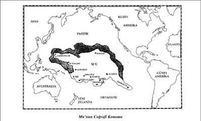
Hem Troano Elyazması hem de Codex Cortesianus, Mu diyarından tepelerin veya “toprak sırtlarının” diyarı olarak bahsediyor. Yunan kayıtları ise “ovalardan” söz ediyor. Üç kaydın da doğru olduğuna inanıyorum, çünkü kıtanın üzerinde, o Pasifik’in derinliklerine gömüldüğü zamana dek dağlar bulunmuyordu. Mu’yu dalgaların altına gömen volkanik faaliyetler, dağların yükselişinin başlangıcıydı.
Su üzerinde, kıtasal kaynaklara ait kesin kanıtlar barındıran toprak kırıntıları bulduğumuzda, bunların bir kıtanın parçaları veya kalıntıları olduğundan bir kez daha emin oluyoruz. Bu küçük toprak parçaları, daha önce de belirttiğim gibi ilkel yerlilerin yaşadığı ufak adalar. Herhangi bir anakaradan binlerce mil uzaktalar; dolayısıyla tarih öncesi zamanlarda burada medeni insanların yaşadığı bir kıta bulunduğunu, diğer tüm kayıtlar, kitabeler ve geleneklerin ortaya koyduğundan çok daha sağlam bir biçimde kanıtlıyorlar.
Antik kayıtlar ve Güney Denizi Adaları’ndaki kalıntılar, insanın medeni fakat bilgiden ve kültürden yoksun yaratıldığını anlatıyor. Kendi ruhunun bilincinde yaratılmıştı, Tanrı’ya inanıyor ve tapıyordu. Kutsal sembol olarak kullanılan belirli figürlerin varlığı sayesinde insanın ilk zamanlarında, zihinsel açıdan tamamen gelişmemiş olduğu ve sıradan konuları öğrenebilmesi için ilk kutsal sembollerin basit olması gerektiği ortaya çıkıyor. Öte yandan, ortaya çıkışından binlerce yıl sonra, insanla ilk karşılaştığımız zamanda onun zihinsel açıdan çok daha gelişkin ve uygar olduğunu görüyoruz: Günümüzden en az 50 bin yıl önce!
Bazı arkeologlar, yazılarında Mu diyarı ve batı ülkeleri konularına değindiler; fakat önlerine gelen birçok kaydı teyit etmeye uğraşmak yerine sadece varsayımlarda bulunduklarından, insanoğlunun dünya yüzünde ilk görünüşüyle ilgilenen okuyucuların, titizlikle yürüttüğüm araştırmalara dayanan gerçeklerle bilgilendirilmesi gereken zaman geldi.
Schliemann, görünüşe göre yalnızca iki kayda, Troano Elyazması’na ve Lhasa Belgesi’ne dayanarak Mu diyarının Atlantis olduğunu ileri sürüyor. Bu kayıtlar Mu ve Atlantis’in aynı şey olduğunu belirtmiyor; bu yalnızca Schliemann’ın iddiası. Eğer başka kayıtları da incelemiş olsaydı, bunların açıkça, Mu kıtasının Amerika’nın doğusunda Atlantis’in bulunduğu yerde değil, Amerika’nın batısında olduğunu anlattığını görecekti. Yine de hem Atlantis hem de Mu volkanik faaliyetlerle parçalanarak denizin dibine gömüldü. Bilim bunu şüpheye yer bırakmayacak şekilde kanıtlıyor.
Le Plongeon, Orta Amerika’nın Batı Toprakları, dolayısıyla da Mu ülkesi olduğu teorisini geliştirdi ve bu çıkarımını Karayip Denizi çevresindeki toprakların şekline dayandırdı; fakat tüm kayıtların, Batı Toprakları’nın, elbette hâlâ su üzerinde olan Orta Amerika’nın aksine parçalanarak suya gömüldüğü konusunda hemfikir olduğunu unuttu.
Muhtemelen bu hataların birçoğu, bazı kayıtların Avrupa’da incelenmelerine rağmen Amerika’da yazılmış olmalarından ve okuyucuların bunu fark etmeden hesaplamalarını Amerika’yı değil Avrupa’yı temel alarak yapmalarından kaynaklanıyor. Bu eski Yunan filozofunun söylediklerine de uyuyor: “Denizin Ötesindeki Ülke: Satürn Kıtası.” Bu arada, Satürn Kıtası Atlantis’in antik isimlerinden biriydi.
Kayıtlar arasındaki esas farklılıksa Amerika’ya göre Batı Toprakları ve Avrupa’ya göre Denizin Ötesindeki Ülke. Görünüşe bakılırsa Yunan kaydının yazarı yanlış anlamalardan kaçınmak istemiş, zira Denizin Ötesindeki Ülke ile ilgili açıklamasını, bunun açıkça Satürn Kıtası, yani Atlantis olarak belirterek yapmış. Sanırım bu en titiz olanları bile tatmin edecek kadar açıktır!
Troano Elyazması, Mu ülkesinin batışının yaklaşık 12.500 yıl önce gerçekleştiğini söylüyor. Tahminimce 12.000 yıl daha doğru. Öte yandan, Troano Elyazması’nın tam yaşı bilinmediği için verilen tarih de kesin değil.
Sais Tapınağı’nın başrahibi, Solon’a Atlantis’in 11.500 yıl önce battığını ve Batı Toprakları’na giden yolun, Atlantis’in ve ötesindeki ülkenin afetler sonucu yıkılarak batması sonucu kapanarak Batı Toprakları’na ulaşımı kestiğini anlatır. Bu, Atlantis’in Batı Toprakları veya Mu olması ihtimalini açıkça ortadan kaldırıyor.
Şimdiye kadar Mu ülkesi hakkında yazanlar bu tarih öncesi kıtayla bağlantılı en önemli kayıtları, yani Güney Denizi Adaları’ndaki harabeleri ve Uxmal, Yucatan’daki Kutsal Sırlar Tapınağı’nın duvarlarındaki yazıtları görmezden geldiler. Göz ardı edilen bu kanıtlara, Güney Denizi Adaları sakinlerinin hayret verici gelenekleri de dahil edilebilir.
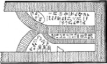
Mu’nun Haritası
Mısır Ölüler kitabı’nda Batı Toprakları’nın temsili.
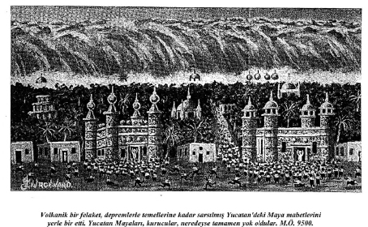
Güney Denizi Adalarında bulunan, kayıtlar ve geleneklerle desteklenen kalıntılar sayesinde, şimdi ilkel ve yarı ilkellerden oluşan adalıların hep bu hâlde olmadıkları; oldukça medeni ve bilgili ataların soyundan geldikleri açıkça görülüyor. Şu anki hallerine bakıldığında geçmişte, tarih öncesi çağlarda atalarının çok büyük bir afet yaşadıkları belli.
Maymun teorilerini ayakta tutma çabasındaki bilim insanları, insanın Pleistosen Çağ’ın başlarında ortaya çıktığını kanıtlamaya uğraşsalar da bu bilimsel sabun köpüğünü bir iğneyle patlatmak kolay. İnsan kalıntıları, Pliyosen Çağı’nı sona erdiren son büyük Manyetik Felaket’in, jeolojik Buzul Devri’nin durgunlaşan sularının oluşturduğu çakıl yataklarında bulundu. Nebraska’daki mağara adamları da aynı şekilde ortadan kalkmıştı.
Niven’in üst şehri, Plestiosen’in başında, dağlar oluşmaya başlamadan önce; en alt şehri ise bundan on binlerce yıl önce, Üçüncü Devir’in içlerinde kurulmuş. Bu Smyrna’daki (İzmir) kazılarla da destekleniyor.
Bilim insanları beyaz ırkların Asya’da ortaya çıktığı teorilerini sürdürmeye çalışıyorlar; yine de bu teoriyi destekleyecek en ufak bir kanıta sahip değiller. Vardıkları sonuçlar varsayımlardan ibaret. Bu kitapta beyaz ırkın nerede doğduğunu gösterecek ve Avrupa’ya varan yolculuklarında izlerini süreceğim.
Güney Denizi Adalarında yaşayan Polinezya yerlileri hakkındaki en şaşırtıcı keşiflerden biri, bunların beyaz insanlardan oluşmaları. Bu son derece güzel insanlardan oluşan halk, dünyanın beyaz ırklarını bir araya getiren eksik halkayı yerine koyuyor.
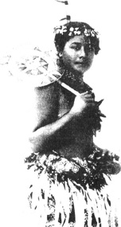
New York Sunday American’ın, American Weekly bölümü koleksiyonundan alınmıştır.
Gilbert Takımadaları, Arorai Adası’ndan Prenses Arawali.
Mu’nun kraliyet armasının işlendiği yelpazesiyle.
Daha önce de belirttiğim gibi, kayıtlar bize insanoğlunun ortaya çıkışının Mu kıtasında gerçekleştiğini ve Polinezya Adaları’nın bu talihsiz adanın su yüzeyinde kalmayı başaran parçaları olduğunu gösteriyor. Kayıtlar ayrıca Meksika ve Orta Amerika’nın Mu halkı tarafından kolonize edildiğini de ortaya koyuyor.
Gelenekler de Mu’dan gelen bu yerleşimcilerin sarışın beyazlar olduklarını; bu sarışın insanların başka bir beyaz ırk olan kumral insanlar tarafından ülkelerinden sürüldüklerini ve gemileriyle doğan güneşin yönündeki topraklara, doğuya yolculuk ederek Avrupa’nın kuzeyine, bugün İskandinavya olarak bilinen bölgeye yerleştiklerini anlatıyor. Aynı kaynaklar kumral ırkın Maya, Orta Amerika ve Atlantis üzerinden Güney Avrupa, Anadolu ve Kuzey Afrika’ya koloniler kurarak yerleştiklerinden bahsediyor.
Eğer beyaz Polinezyalıları bırakıp daha batıdaki, Güney Denizi Adaları’nın Mikronezya olarak bilinen bölümündeki esmer ırklardan birine göz atacak olursak; bölgedeki esmer halkların da beyaz benzerleri gibi, fiziksel olarak muhteşem bir görünüme sahip olduklarını görürüz. Bu insanlar, eski, bronz Yunan heykellerini andırırlar. Yine esmer bir ırk olan Fijililerin, Güney Denizi Adaları sakinleri arasında en yetenekliler oldukları söylenir.
Yandaki resim, esmer halktan birine, Hawaii’nin 4.000 mil güneybatısındaki Gilbert Takım Adaları’ndan biri olan Arorai Adası’nda Arawali’ye ait. Fotoğrafta oldukça güzel, gelişmiş bir başa; hoş bir yüze ve nazik bir yüz ifadesine sahip bir kız görünüyor. Bu, Arorai Adası’nın kralının kızı. Onun “çok kibar, sevimli; fakat çabuk öfkelenen ve biraz kıskanç, yine de çevresine kıyasla oldukça vakur” olduğu söyleniyor.
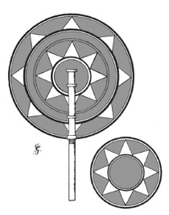
Prenses Arawali’nin Taşıdığı Yelpaze
Arawali’nin kıyafetleri yabani halkın olsa da başı ve yüzü daha yüksek bir medeniyetin temsilcisine ait. Zavallı Arawali! Yamyam bir kabileye mensup olsa da tuhaftır ki hiçbir zaman yerlilerin deyimiyle “uzun domuz” yani insan eti yememiş. Elinde tuttuğu yelpaze, üzerinde Güneş İmparatorluğu Mu’nun kraliyet armasını barındırıyor.
Mu’nun yıkımından önce dünyanın herhangi bir yerinde vahşiliğin var olduğuna dair hiçbir antik kayıt bulunmadı. Öyleyse insanoğlunun muhteşem örnekleri olan Güney Denizi Adaları sakinlerinin ataları nasıl böylesine yozlaşarak birer yamyama dönüştüler? İlk insan ırkının yaşadığı büyük afeti anlatan hikâyemiz, bu soruyu yanıtlıyor.
Marquesas Adaları’ndan
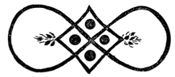
Paumoto Adaları’ndan
Yaratıcı’nın Kuş Sembolleri: Tanrı’nın yaratıcı özelliğinin sembolleri olarak kuşlar, anayurdun kuzeydoğu bölgelerinde barınanlar arasında, yaratıcı kuvvetlere dair en sık rastlanan semboller olarak göze çarpıyor. Kuş sembolü güneye, şimdi Hawaii’nin bulunduğu yere kadar, belki de daha da öteye uzanıyordu.
Şüphesiz bu, anayurt halkı için kutsal, yine de bazılarının favorisi olmayan bir yaratıcılık sembolüydü. Mısır ve Babil gibi doğu ülkelerinde ve Niven’in Meksika Taş Tabletleri ile ortaya koyduğu gibi antik Meksika’da kutsal kuşlarla ilgili birçok kayıt var. Ayrıca bu sembol, ona “Gök Gürültüsü Kuşu” adını veren Kuzey Amerika yerlileri tarafından yaşatılmaya devam ediyor. Kızılderili efsanelerine göre; “Yıldırım, Gök Gürültüsü Kuşu’nun göz kırpması, gök gürültüsü onun kanat çırpması, yağmur ise onun sırtındaki gölden geliyor.”
Niven’in Meksika Kuş Tabletleri: Niven’in 2600 tabletten oluşan koleksiyonda kuşlar hakkında yaklaşık otuz tablet bulunuyor. Otuz tableti temsil için üç tanesini seçmiş bulunuyorum. Üzerlerindeki eski, ezoterik ve nümerik tapınak yazılarından anlaşıldığı kadarıyla bu tabletler Yaratıcı’yı temsil ediyor. Uygur sayıları olan çizgiler ve çubuklar barındırdıkları için, bilinmeyen Uygur insanları tarafından yazıldıkları sonucuna varılıyor. Bu, Uygurların güneş sembolü olan ve tek tanrıcılıkta Tanrı’yı temsil eden göz çizimleriyle de destekleniyor.
Ortadaki 1086 numaralı tablet, Mu hiyeratik alfabesinin H harfini taşıyor, yani Yaratıcı Kuvvetler’in alfabetik sembolünü.
Hawaii’de bir efsane şöyle diyor: “Yüksekten büyük bir kuş geldi ve denize yumurtasını bıraktı. Yumurta çatladı ve Hawaii doğmuş oldu.” Dolayısıyla Yaratıcı’nın Kuş Sembolü’nün antik Hawaii halkı tarafından kullanıldığı sonucunu çıkarabiliriz.
Mısır Kuşu Seb: Mısır panteonunda tanrılardan birinin bir kuş adı -kaz- taşıdığını görüyoruz. Kaz, tüm doğu efsanelerin-
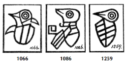
Meksika Kuş Tabletleri
de bahsi geçen kutsal bir kuş. Yukarı Mısır’a yerleşim Hindistan’dan gerçekleşmişti. Seb, “tanrıların babası”, “tanrıların hamili” gibi isimlerle anılıyordu. Seb, başlığında sembolü bulunan bir kaz türünün Mısır’daki adıydı. Bıraktığı sıradan bir yumurtadan dünyayı ve dolayısıyla insanı yaratan Seb, “Gıdaklayan Ulu” olarak da biliniyordu. Şöyle deniyor: “Gıdaklayan Ulu’nun yumurtasını koruyorum. O, ben gelişirsem gelişir, ben yaşarsam yaşar, ben soluk alırsam soluk alır.” (Ölüler Kitabı’ndan)
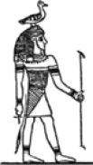
Seb
Burada da Seb’in açıkça Yaratıcı Kuvvetler’in -Dört Büyük Temel Kuvvet’in- sembolü olduğu görülüyor.
Mu’nun yıkımını betimleyen, Kuzey Amerika yerlilerine ait bir tablo. Bu çizim Kanada’nın İngiliz Kolombiya’sında, Vancouver Adası’nın batı sahillerinde yaşayan Nootka Kızılderililerine ait.
Mu’yu ve onun yıkımını anlatan yüzlerce yazı, ayrıca Troano Elyazması, Borgian Codex ve Codex Cortesianus gibi Maya eserlerinde görülen süslemeleri oluşturan karmaşık semboller olsa da dünyada bu yıkımın nasıl gerçekleştiğini anlatan yalnızca iki tane tablo veya resim buldum. Biri Mısır’a, diğeri Kuzey Amerika yerlilerine ait. Fakat bu ikisi arasında göze çarpan bir farklılık var. Mısır çizimi Mu’nun bir ateş çukuruna düşüşünü gösterirken, Kızılderili resmi ise kıtanın üzerini kaplayarak onu derinlere gömen suları anlatıyor, yani Mu’nun yıkımının iki safhasını. Dolayısıyla çizimlerin ikisinin de doğru olduğu görülüyor. Bu iki halk da şimdi aralarındaki büyük uzaklığa rağmen, o zamanlar Mu’nun yıkımının bilimsel sebeplerini biliyordu.
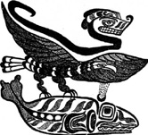
American Weekly’nin izniyle
Mu’nun yıkımını anlatan bir Kuzey Amerika Kızılderilisi çizimi
Bu Kızılderili resmini oluşturan sembollerin çoğu Mu’da kullanılanlarla aynıyken, sembollerin bazıları bu kadar tanıdık değil. Mu yazılarına kıyasla en büyük değişikliğin, Kızılderililerin suyu simgelemek için kullandıkları sembol olduğu göze çarpıyor. Naga, Uygur, Karian, Amerikan Maya gibi kültürlerde Khanab adlı, vücudu genellikle kabaran okyanus gibi dalgalı resmedilen süssüz bir yılan kullanılıyordu. Bu eski Kızılderililer ise güneyli komşularından bir adım ileri gitmiş; suları ikiye ayırarak balıkların en büyüğünü okyanusları, dalgalı yılanıysa daha ufak suları temsil etmek için kullanmışlardı. Bu okyanus sembolüne katil balina diyorlardı. Bu sembole neredeyse tüm Kuzey Amerika Kızılderili kabilelerinde rastlanıyor, dolayısıyla ortak bir kökene ait. Muhtemelen “katil” lakabı ona, Mu’yu süpürüp milyonlarca insanını boğarak öldürmesinden dolayı verildi.
Resim üç parçadan oluşuyor: Bir yılan, bir kuş ve bir balık. Üstteki yılanın başında kuş tüylerinden bir sorguç var, dolayısıyla bu süslenmiş bir yılan. Bu, anayurdun kuzeyindeki insanların tüylü yılanı Quetzacoatl’ın alışıldık bir çizimi. Süslü yılan tüm antik halklar arasında daima yaratıcı olan Tanrı’nın ve onun yaratımlarının, altın çağın kitaplarında anlatılan Yedi Emir’in sembolü olmuştu.
Resmin ortasında Kızılderililerin Gök Gürültüsü Kuşu adını verdikleri, kuzeybatı bölgesi Kızılderililerinin efsanelerin temellerinden birini oluşturan kuşun klasik bir çizimi görülüyor.
Mu’nun kuzey kısımlarında kuşların Kutsal Dörtlü’nün, yani Yaratıcı’nın yedi yüce emrini yerine getirmekle görevli Dört Büyük Temel Kuvvet’in sembolü olarak kullanıldığını öğrendim. Mu’da kuş sembollerinin kullanımı oldukça yaygın olmalı, zira bu sembollerin benzerlerine Pasifik Okyanusu’nun Hawaii Adası’nda, Niven’in Meksika Tabletleri’nde, Mısır Tanrısı Seb’de ve ayrıca doğunun genelinde rastlanıyor. Kuşların yanı sıra, Kutsal Dörtlü’yü temsil için haçlar da kullanılıyordu. Keşiflerin ışığında haçın evrensel olarak kullanıldığı anlaşılıyor. Yalın bir haçın, 70.000 yıl önce bile Kutsal Metinler’de Dört Yaratıcı Kuvvet’in sembolü olarak kullanıldığı göze çarpıyor.
Üçüncü figür bilindik bir balinaya, katil balinaya ait. Bu ne kadar doğal gelse de Kuzey Amerika Kızılderilileri, suyu balıkla temsil eden tek halk. Beni şaşırtan, bu sembolün tüm halkların kültürlerinde bulunmaması. Büyük kuvvetleri simgeleyen Gök Gürültüsü Kuşu, okyanus sularını temsil eden balinanın sırtına pençelerini gömmüş hâlde resmedilmiş; yani suların, güçlerin elinde ve kontrolünde tutulduğu anlatılıyor.
Balina -yani okyanus suları- ölü ve hareketsiz, zira boynu güçler tarafından kırılmış; dolayısıyla artık can alamayacak. Trajedi sona ermiş.
Bu, Gök Gürültüsü Kuşu’nun kanatlarından inen ve bir uçurum yaratan “manyetik kuvvetlerle” anlatılıyor.
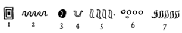
1: Balinanın gözü iç içe iki kare ve bunların içindeki, gözbebeğini oluşturan dolu bir üçüncü kareden oluşuyor. Çizgi hâlindeki kareler “anne” ve “ülke” anlamında; yani anayurt. Üçüncü siyah kare yani gözbebeği karanlığı temsil ediyor; yani ülkenin üzerine güneş doğmuyor. Göz, kırık boyun ve içine çekildiği uçurumla beraber ele alındığında anlamları şu: Anayurt karanlık uçuruma çekildi.
Niven’in Meksika Tabletleri arasındaki 1430 numaralı tablette bu gözün tam bir kopyası görülüyor. Bundan sonrasını okumak kolay. Anayurt ve kolonilerinde sık kullanılan sembolleri kullanmam yeterli.
2: Balinanın ağzından suyun bir şeyi boğaza taşıdığı gösteriliyor.
3: Ağzın sonunda, merkezinde bir geçit bulunan boğaz görülüyor. Boğazın ötesindeyse anayurdun hiyeratik alfabesinin U harfi bulunuyor.
4: bulunuyor. Bu harfin ezoterik anlamı ise bir uçurum. Böylece anayurdun bir su uçurumuna çekildiğini, yani battığını anlıyoruz.
5: Uçurumun hemen gerisinde dört çubuk, anayurtta sayıların yazılış şekillerinden birinde olduğu gibi, dört rakamını veriyor. Dört, Kutsal Dörtlü’nün yani Dört Büyük Yaratıcı Kuvvet’in rakamsal sembolüydü.
6: Balığın omurgasında, başka bir popüler sayma biçimi olan disklerle de dört rakamı yazılı.
7: Omurganın üstünde beş çubuk, yani beş rakamı görülüyor; Tanrısallığın, Yaratıcı ile birlikte Dört Büyük Yaratıcı Kuvvet’in sembolü.
Bu resim, anayurdun dolaylı yoldan Dört Büyük Kuvvet tarafından yok edildiğini belirtiyor; bu, Mu’nun yıkımı hakkındaki tüm yazılarda değinilen bir nokta.
Açıklama: Yaratıcı, insanoğlunun anayurdunun yok olmasını istedi. Yaratıcı’nın emirlerini yerine getirmekle görevli Dört Büyük Kuvvet, toprakların çökmesine ve suların onları örtmesine neden oldu. Bir su uçurumuna gömülerek battılar.
Nevada kayalıklarındaki Mu ile ilgili yazıların dışında, onun yıkımını anlatan tamamen Amerika kökenli başka kayıtlar da bulunuyor. Gerçekten de Batı Amerika, antik geçmiş hakkında dünyanın geri kalanın toplamından daha fazla kayda sahip. Bu Amerikan kayıtları da son derece yaşlı.
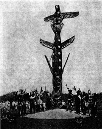
American Weekly’nin izniyle
Bir Alaska Totem Direği
Bir Alaska Totem Direği: Bu totem Alaska, Queen Charlotte Adaları’ndan, Kwa Ma Kolas olarak bilinen bir Haidan Kızılderilileri kabilesine ait. Yaşlı şeflerden biri bu direğin üzerindeki sembolleri şöyle açıkladı:
“Direğin tepesini süsleyen kanatlı yaratık Gök Gürültüsü Kuşu, Yaratıcı’nın temsilcisi.32 Gök Gürültüsü Kuşu keskin gözlerini kırptığında şimşek, kanatlarını çırptığında gök gürültüsü olur. Onun muazzam sırtının ortasındaki bir gölden damlayan sular yağmuru oluşturur.33 Gök Gürültüsü Kuşu’nun pençeleri, Katil Balina’nın34 kuyruğuna sıkıca kenetlenmiştir.”
Kabilenin en yaşlı üyesi olan Haidan şefi şöyle anlattı: “Büyük sel zamanında, Çelik Başlı Adam’a tüm insanların lideri ve Gök Gürültüsü Kuşu’nun, Gök Gürültüsü Tanrısı’nın ve diğer tüm tanrıların sevgili kuluydu. Bu büyük sel dünyanın yüzünü kapladığında tanrılar Çelik Başlı Adam’ın ölmesinden korktular ve onu mucizevi biçimde çelik başlı alabalığa35 dönüştürdüler. Sel günleri boyunca insanların şekil değiştirmiş lideri Nimpkish Nehri’nin sularında yaşadı. Evi için
odun ve kereste topladı ama evini yapacak gücü bulamadı.36
Derken Gök Gürültüsü Kuşu, büyük bir çatırtı ve gürlemesiyle Çelik Başlı Adam’ın karşısında belirdi. Gök Gürültüsü Kuşu tanrı maskesini çıkardı ve Çelik Başlı Adam’a insan yüzünü gösterdi. ‘Ben de senin kadar insanım.’ dedi kuş ‘ve keresteleri yığmana yardım edeceğim. Sen kabileni kurarken burada, yanında olacak ve sonsuza kadar senin koruyucun olacağım. ‘Ve sonra kuş, dört gök gürlemesiyle bir grup zırhlı savaşçının çınlamalar arasından ortaya çıkmasını sağladı. Bu savaşçılar, Çelik Başlı Adam ile birlikte, sayıca çoğalarak Haidan halkını meydana getirecek özü oluşturdular.”37
Bu totem direğindeki diğer semboller “Savaşçı Prenses”in, denizlerin çift başlı canavarının ve Balina ile Deniz Aslanı’nın hikâyesini anlatıyor.
Balina ve Deniz Aslanı: “Deniz Aslanı, bir savaşçının karısını Katil Balina’dan (boğulmaktan) kurtarmasına yardım ederken kendisi de Katil Balina’ya yenik düştü. Kolus, ailenin koruyucu tanrısı, onu kurtardı ve ailesine kavuşturdu. Deniz Aslanı kabilenin bir üyesi oldu ve Çelik Başlı Adam’ın kızı olan Savaşçı Prenses ile evlendi.”38
Not: John Ballou’nun Oahspe’de anlattığı üzere, Algonkin Kızılderililerinin, sel ve Mu’nun batmasıyla ilgili Pan adlı bir hikâyeleri var. Kitapta da gösterildiği gibi bu hikâye aslında iki hikâyeden oluşuyor.
“Algonkin Kızılderilileri Sel’in geleceğini öğrenmişlerdi ve ondan kaçmak için gemiler yapıyorlardı. Tufanın 138 gemisi Pan Kıtası’ndan yola çıktı.” Bununla bağlantılı olan ve hemen arkasından gelen kısım ise şu: “Aynı günde, göğün ve dünyanın kapıları açıldı. Ve toprak, denizdeki bir gemi gibi bir o yana, bir bu yana savruldu; yağmur gökten sel gibi indi ve dünyanın tabanının altından şiddetli gürlemeler (depremler) yükseldi. Ve toprak girdabı en uçtan içeri doğru kapandı ve işte, toprak parçalanmıştı! Görkemli bir kıta bağlarından kopmuştu ve toprağın ateşleri şiddetli kükremeler eşliğinde, alevler ve dumanlarla gün yüzüne çıktı. Ve toprak, denizdeki bir gemi gibi bir o yana, bir bu yana savruldu. Ve toprak girdabı bir kez daha kenarlarından içeri doğru kapandığında, ülke baskıyla suların altına gömüldü, bir daha yukarı çıkmamak üzere.”
32 Gök Gürültüsü Kuşu burada Yaratıcı’dan gelen Dört Büyük Yaratıcı Kuvvet’in temsilcisi olarak gösteriliyor. Bu sembolü aynı anlamıyla birçok Kuzey Amerika Kızılderili kabilesinde, özellikle kuzeybatıdakiler arasında gördüm. Dört Yaratıcı Kuvvet’in kuşlarla simgelenmesi Niven’in Meksika Tabletlerinde sık görülen bir durum. Bu, Mısır’da da antik Tanrı Seb şeklinde görülüyor. Gök Gürültüsü Kuşu, Kızılderililerin en eski öykülerinden birinde bulunuyor. Meksika ve Mısır ile birlikte bu ortak bir kökeni ortaya çıkarıyor.
33 Yıldırım, Dört Büyük Temel Kuvvet’in işleyişleri sonucu ortaya çıkar. Burada da onların işi olarak anlatılmış. Kızılderililer için hiç de fena değil.
34 Katil Balina: Bu sembol totemin çoğunu kaplıyor. Katil Balina, Kızılderililerin okyanus sembolüydü. Mu’nun on kabilesinin çoğu suları, okyanuslar da dahil, süssüz bir yılanla simgelerdi. Çelik Başlı Adam: Totemin yaklaşık tam ortasında Haidan kabilesinin kurucusu Çelik Başlı Adam figürü görülüyor. Elinde, Katil Balina’nın gövdesine saplanmış bir mızrak var.
35 Burada orijinal efsanenin içine işlenen öykünün tamamlanışına şahit oluyoruz. Çelik ve çelik başlı alabalık, iki yüz yıl önce Kızılderililerin bilmediği isimlerdi. Şüphesiz, Alaska ve Mu arasında bir su kütlesi bulunduğu için Haidanların ataları buraya gemilerle gelmişlerdi, yüzerek değil. Doğuda, Mu’nun çocuklarının anayurttan suyun üzerinde sıçrayan balıklar gibi ayrıldıklarını gösteren birçok sembolik oyma var.
36 Bu noktada efsanede belirgin bir eksik var. Çelik Başlı Adam’ın nasıl tekrar insan olduğu anlatılmıyor.
37 Bu cümlede birçok kurgusal öğe mevcut. Şüphesiz bahsedilen savaşçılar Mu’dan gelen yeni gruptu. Efsane kadınların geldiğini de söylemiyor. Kabile kadınlar olmadan nasıl çoğalacaktı? Sel: Burada bir selden bahsediliyor, fakat bunun son manyetik felaket mi, Mu’nun batışıyla tetiklenen bir volkanik aktivite mi, yoksa bölgesel gaz kuşaklarının şekillenmesinin sonucu mu olduğunu gösterecek yeterli bilgi yok. Birçok Kuzey Amerika Kızılderili kabilesinin büyük sel ile ilgili öyküleri var.
38 Denizaslanı, şüphesiz totemi denizaslanı olan başka bir kabilenin üyesiydi. Eski zamanlarda bir insanı totemiyle çağırmak oldukça yaygındı. Çelik Başlı Adam tüm insanları yönettiği için onun Mu’nun sembolü olduğuna en ufak bir şüphe yok. Mu tüm dünyaya hükmediyordu ve “Büyük Hükümdar” olarak adlandırılıyordu.